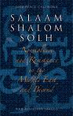

پذيرش > اخبار > کمپین یک میلیون امضا در تقویم سال 2008 لیگ مقاومان جنگ (WRL)/جلوه جواهری


 کمپین یک میلیون امضا در تقویم سال 2008 لیگ مقاومان جنگ (WRL)/جلوه جواهری کمپین یک میلیون امضا در تقویم سال 2008 لیگ مقاومان جنگ (WRL)/جلوه جواهری
6 اردیبهشت 1386 - - نسخه قابل چاپ
تغییر برای برابری:
*WRL با بیش از 80 سال سابقه فعالیت علیه جنگ، کمپین را به عنوان شیوه ای صلح آمیز برای تغییر قوانین تبعیض آمیز معرفی کرده است
* قدرت کمپین در اتکای آن بر استراتژی حرکت از پایین، تعامل میان کنشگران کمپین و زنان معمولی، رویکرد بدون خشونت و صلح آمیز برای اصلاح قانونی، و تاکید بر اهمیت انتخاب و عاملیت هر زن است.
لیگ مقاومان جنگ(the War Resisters League) را در سال 1923 مردان و زنان مخالف جنگ جهانی اول تشکیل دادند. بسیاری از آنها به دلیل امتناع از پیوستن به ارتش زندانی شده بودند. از همان سال، لیگ مقاومان جنگ، جنگ را به عنوان جنایتی علیه بشریت، بیان کرده است و اعضای این گروه، به عنوان گروه ضد خشونت و ضد جنگ طلب، مصمم شدند تا از هیچ جنگی، داخلی یا بین المللی، حمایت نکنند و به طور مسالمت آمیز و بی خشونت، در رفع همه موارد پیش آمده از جنگ بکوشند. یکی از بنیان گذاران این گروه، جسی والاس هوگان، طرفدار حق رای زنان و صلح و سوسیالیست برجسته، معتقد بود که اگر تعداد قابل ملاحظه ای از مردم در برابر جنگ بایستند و آن را به چالش کشند، دولت ها در پیوستن به جنگ و یا راه اندازی آن، مردد شده و تامل خواهند کرد. طی جنگ جهانی دوم صدها نفر از اعضای WRL در ایالات متحده در امتناع از جنگیدن، دستگیر و روانه زندان شدند.
لیگ مقاومان جنگ، پس از جنگ و آزاد شدن اعضایشان از زندان، رادیکالیزه شدند. نه تنها تجربه زندان افکار آنها را تعمیق بخشید، بلکه اعضای لیگ تحت تاثیر نمایش مبارزه بدون خشونت گاندی برای آزادی هند نیز قرار گرفتند. در دهه 1950 اعضای WRL از طریق مخالفت با آزمایش هسته ای و دفاع غیر نظامی در جنبش حقوق مدنی فعال بودند.
اکنون WRL بیش از 50 سال است که تقویم میزی سالانه برای فروش تهیه می کند. هر تقویم زمینه ای به روز و جالب دارد که برخی شیوه های کار و فعالیت ضد نظامی گری را در آن ترویج می کند. WRL با سابقه بیش از 80 سال فعالیت علیه جنگ و نظامی گری و تلاش در جهت رسیدن به جامعه ی بدون خشونت، در صفحه دوم تقویم سال 2008 خود، کمپین یک میلیون امضا را به عنوان شیوه ای صلح آمیز برای تغییر قوانین تبعیض آمیز معرفی کرده است. تیترهای تقویم 2008 این گروه، صلح، سلام، بدون خشونت و مقاومت در خاور میانه و شرق دور است.
برخی از تقویم های اخیر WRL
 52 داستان واقعی از موفقیت روش بدون خشونت (2002) 52 داستان واقعی از موفقیت روش بدون خشونت (2002)
تغذیه انقلاب بدن خشونت(2003)
75 سال مقاومت بدون خشونت (تاریخی از WRL، 1998)
سینمای صلح – یک فستیوال فیلم ضد جنگ (2007)
هستند.
برای اطلاع بیشتر درباره این گروه می توانید به سایت www.warresisters.org مراجعه نمایید.
متنی که لیگ مقاومان جنگ برای تقویم سال 2008 درباره کمپین تهیه کرده است در زیر آمده است. این متن با وجود آنکه بسیار کوتاه است اما توانسته ویژگی های بارز کمپین را مطرح سازد.
متن مندرج در تقویم سال 2008 WRL درباره کمپین یک میلیون امضا:
فعالان حقوق زنان ایرانی از طریق کمپین یک میلیون امضا، که خواستار پایان یافتن قوانین تبعیض آمیز علیه زنان است، با تبعیض جنسیتی مبارزه می کنند. این حرکت در ادامه یک قرن تلاش زنان برای رسیدن به برابری جنسیتی است.
کمپین دوسالانه "یک میلیون امضا" جریانی است که در پی تجمع اعتراضی 12 ژوئن 2006(22 خرداد 1385) که توسط نیروهای امنیتی به خشونت کشیده شد، به وقوع پیوست. فعالان کمپین به سراغ مکان هایی که غالبا زنان تجمع می کنند می روند- فروشگاه ها، مدارس، اداره ها، سالن های آرایش، یا خانه هایشان. آنها به سراغ این زنان می روند و از آنها می خواهند تا بیانیه کمپین را امضا کنند، اما چه آنها بیانیه را امضا کنند یا نه، کتابچه ای را به آنها می دهند که در آنها شرح داده شده که چگونه نظام حقوقی ایران، حقوق کامل زنان را پایمال می کند. بنابراین، حتی زنانی که بیانیه را امضا نمی کنند درباره وضعیت جنس دوم بودن خودشان آگاه خواهند شد.
قدرت کمپین در اتکای آن بر استراتژی حرکت از پایین، تعامل میان کنشگران کمپین و زنان معمولی، رویکرد بدون خشونت و صلح آمیز برای اصلاح قانونی، و تاکید بر اهمیت انتخاب و عاملیت هر زن است.
این کمپین به طور خلاقانه ای توانسته ایده ی سنتی جمع کردن امضا به صورت خانه به خانه را با تکنولوژی مدرن در هم آمیزد. کنشگران کمپین امضاها را از طریق روش چهره به چهره جمع می کنند و همچنین از اینترنت برای گسترش و تسریع فرایند جمع آوری امضا ها استفاده می کنند. این حرکت فرصتی را برای هر فرد علاقمند به ارتقای عدالت جنسیتی برای پیوستن به آن فراهم می کند.
در 14 دسامبر 2006 کمپین اولین نشست سراسری خود را که همه فعالان کمپین از سراسر ایران به آن دعوت بودند، برگزار کرد.
ارسال به
بالاترین
،
توییتر
،
فریندفید
،
فیسبوک
در همين بخش :
 پروین ذبیحی برنده جایزه حقوق بشری سازمان غيردولتى اتريشى سودويند شد پروین ذبیحی برنده جایزه حقوق بشری سازمان غيردولتى اتريشى سودويند شد
پخش کارت پستال و بروشور در روز جهانی زن در تهران
تمدید زمان برای امضای بیانیهی جمعی از فعالان زن به مناسبت هشت مارس
مجوزی که در نطفه خفه شد
بیش از 2000 امضا در اعتراض به تبعیض های آموزشی به مجلس تحویل داده شد
ديگر بخش ها :
طرح یک میلیون امضا
|
مقالات
|
سایت نوشته ها
|
اخبار
|
گزارش كمپين
|
گفت و گو
|
علیه سکوت
|
كوچه به كوچه
|
نامه های شما
|
گزارش ویژه
|
گفتگو با اعضا
|
ویژه سالگرد کمپین
|
تصویر برابری
|
دل آرام علی
|
تریبون
|
مقالات
|
تاریخ شفاهی
|
خارج از چارچوب
|
کتابخانه
|
درباره کمپین
|
کمپین در شهرها
|
کمپین در بند
|
صدای تغییر
|
ویژه 22 خرداد
|
لایحه حمایت از خانواده
|
گالری
|
عشا مومنی
|
امیر یعقوبعلی
|
خدیجه مقدم
|
راحله عسگری زاده و نسیم خسروی
|
پروین اردلان،جلوه جواهری، مریم حسین خواه، ناهید کشاورز
|
زینب پیغمبرزاده
|
سعیده امین، سارا ایمانیان، محبوبه حسین زاده، ناهید کشاورز و همایون نامی
|
احترام شادفر
|
نسیم سرابندی زاده،فاطمه دهدشتی
|
وبلاگ مهمان
|
پرونده خرم آباد
|
دستگیری ها
|
مریم مالک
|
پرستو اللهیاری
|
مهرنوش اعتمادی
|
سمیه رشیدی
|
Other Languages
|
همراهان
|
«فراخوان کمپین ده روز با بهاره هدایت»
| English
|